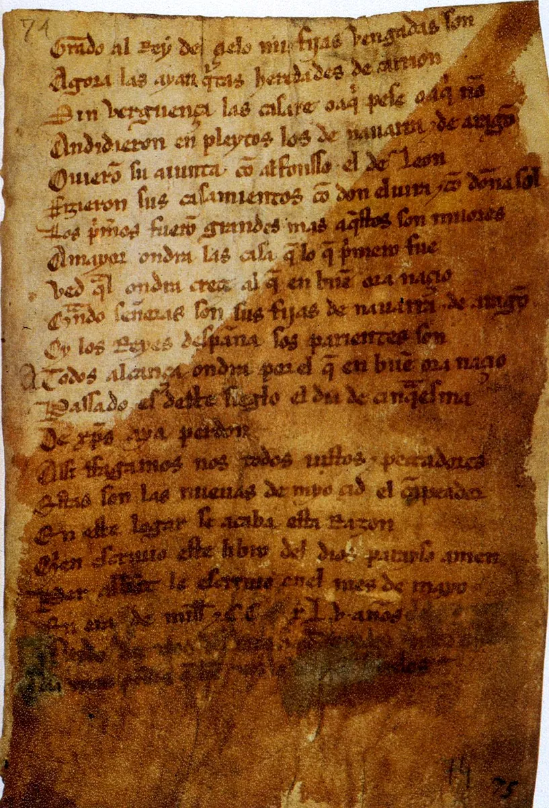
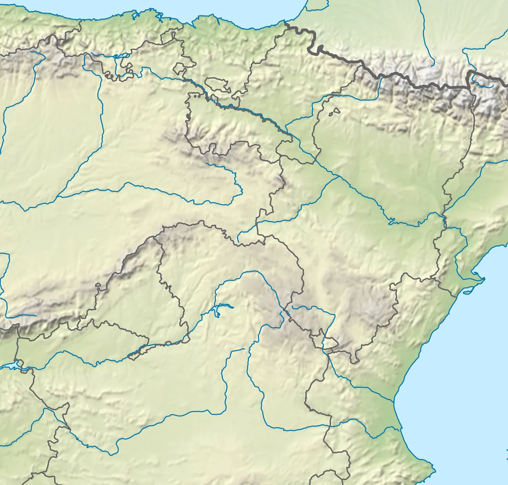

El destierro
1Antes de empezar: texto inicial
Responde a mano, sin ayuda. No cuenta para nota: el último día lo vas a releer.
¿Qué se lleva una persona cuando tiene que dejarlo todo atrás? ¿Qué hace que la llamemos héroe?
2Los juglares Observo y comparo
 12
12Juglares en las Cantigas de Santa María, corte de Alfonso X (hacia 1280).
3¿Quién escribió el Cantar? Fuente: el manuscrito

12Último folio del manuscrito. Biblioteca Nacional de España.
El destierro
4Lo que deja atrás Cantar I · Vivar
5Burgos cierra las puertas Preguntas de la antología
El rey Alfonso ha mandado una carta sellada: quien dé posada al Cid perderá sus bienes «y los ojos de la cara». La puerta de la posada está cerrada a cal y canto. Sale una niña de nueve años: «¡Campeador, que en buena hora ceñiste espada! El rey lo ha prohibido. Cid, con nuestro mal vos no ganáis nada. Que el Creador os proteja.» El Cid comprende que no tiene la gracia del rey, se aparta de la puerta y acampa fuera de la ciudad, junto al río Arlanzón.
Versión adaptada a partir de la antología de clase.El destierro
6Como la uña de la carne Preguntas de la antología
Antes de salir de Castilla, el Cid se despide de su mujer, doña Jimena, y de sus hijas, doña Elvira y doña Sol, que se quedan en el monasterio. Suenan las campanas. Todos lloran:
El Cid espolea su caballo y mira atrás otra vez. Entonces Minaya Álvar Fáñez le anima: «¿Dónde está vuestro esfuerzo, mio Cid? ¡En buena hora nacisteis! Pensemos en el camino: las penas de hoy se volverán alegría.»
7El camino del destierro Mapa

123456Mapa de relieve: NordNordWest, Wikimedia Commons (recorte).
La ruta a pie «El destierro» del Camino del Cid (caminodelcid.org) va de Vivar a Atienza: 15 etapas y 286 km. Escribe el lugar de cada número.
| # | Lugar |
|---|---|
| 1 | |
| 2 | |
| 3 | |
| 4 | |
| 5 | |
| 6 |
El destierro
8El epíteto: un nombre que es un elogio Taller de estilo
9Cómo suena: asonancia y hemistiquios
Los versos de una tirada repiten las vocales desde la última sílaba tónica: es la rima asonante. Cada verso tiene dos mitades (hemistiquios) separadas por una pausa (cesura, //).
10El juglar habla al público Preguntas de la antología
El Cid lucha montado en Babieca, su caballo. Rompe la lanza y saca la espada: «por el cobdo ayuso la sangre destellando» (por el codo abajo, chorreando la sangre).
veriedes = veríais · adágara = escudo · loriga = cota de mallaEl destierro
11El león suelto Preguntas de la antología
Fernando, uno de los infantes, se mete debajo del escaño del Cid. Su hermano Diego sale corriendo gritando «¡No volveré a ver Carrión!» y se esconde tras una viga de lagar, lleno de suciedad. El Cid se despierta, va hacia el león, que baja la cabeza, y lo devuelve a la jaula. Toda la corte se ríe de los infantes, que juran vengarse.
| Personaje | ¿Cómo reacciona ante el león? |
|---|---|
| Fernando | |
| Diego | |
| El Cid |
12El robledal de Corpes Preguntas de la antología
Este texto es duro: habla de violencia contra dos mujeres. Lo leemos para entender el poema y para hablar de ello.
Allí les tuellen los mantos e los pelliçones, / páranlas en cuerpos y en camisas y en çiclatones. / Espuelas tienen calçadas los malos traidores, / en mano prenden las çinchas fuertes e duradores. (vv. 2720-2723)
Los infantes se quedan solos con sus esposas en el bosque, las desnudan y las golpean. Doña Sol les pide que las maten con la espada antes que deshonrarlas así. Ellos las dejan por muertas y se van diciendo: «¡Ahora queda vengada la burla del león!». Félez Muñoz, sobrino del Cid, sospecha, vuelve atrás y las salva.
13La voz de las hijas Escribo
En el Cantar, doña Elvira y doña Sol casi no hablan. Dales voz: escribe 3 o 4 versos de una de ellas ante la corte del rey, con un epíteto para sí misma.
El destierro
14Planifico Mi cantar del destierro · 1
15Borrador 1 A mano
Al menos 10 versos con la misma asonancia (sigue en el dorso si lo necesitas). Escribe cada mitad del verso a un lado de la línea discontinua.
El destierro
16Revisión entre iguales Mi cantar del destierro · 2
| En el cantar de mi compañero o compañera… | Sí | Casi | Aún no | Mi sugerencia |
|---|---|---|---|---|
| Hay un héroe o heroína con epíteto. | ||||
| Hay tres cosas concretas que se dejan. | ||||
| Todos los versos terminan con la misma asonancia. ¿Cuál? | ||||
| Cada verso tiene una pausa en medio. | ||||
| Hay una apelación al público. | ||||
| Hay una comparación de la despedida. | ||||
| Tildes, signos de apertura ¡ ¿ y coma del vocativo. |
17Reescribo
Copia tres versos que cambias después de la revisión.
| Antes | Después | Por qué lo cambio |
|---|---|---|
18Ensayo como juglar
Marca en tu borrador cómo lo vas a decir: subraya las palabras que quieres destacar, pon / en las pausas y ↗ donde subes la voz. Ensáyalo dos veces con tu compañía.
El destierro
Copia final, a mano y sin tachones. Es la versión que recitarás y que se expondrá en clase.
El destierro
19La juglaría Coevaluación
Escribe el nombre de cada juglar de tu compañía y marca lo que hace bien.
| Juglar | Se le oye bien | Marca las pausas | Mira al público | Transmite emoción |
|---|---|---|---|---|
20Texto final
Responde otra vez, sin mirar tu texto inicial. Usa lo que has leído y escrito.
¿Qué se lleva una persona cuando tiene que dejarlo todo atrás? ¿Qué hace que la llamemos héroe?